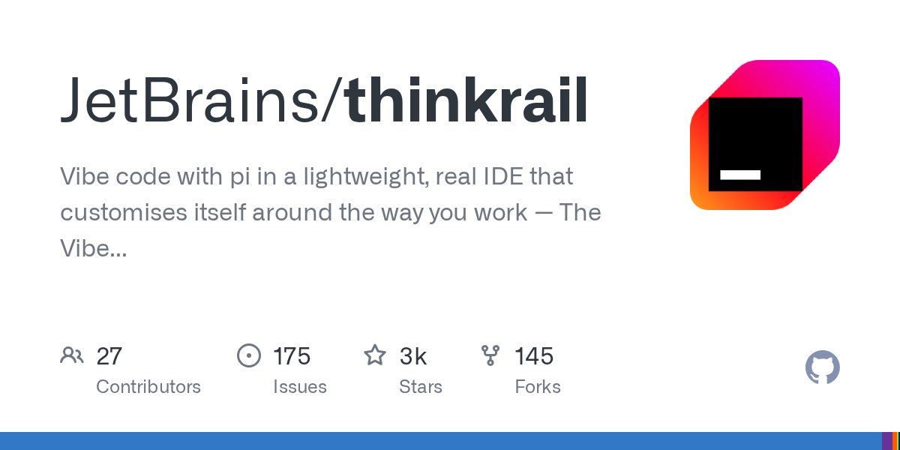
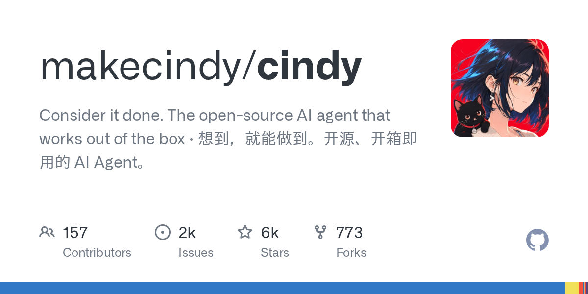
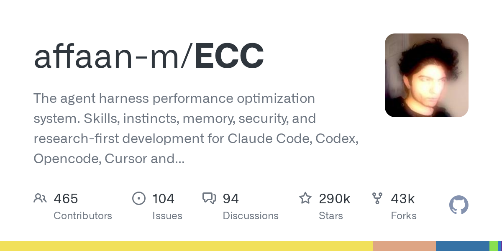
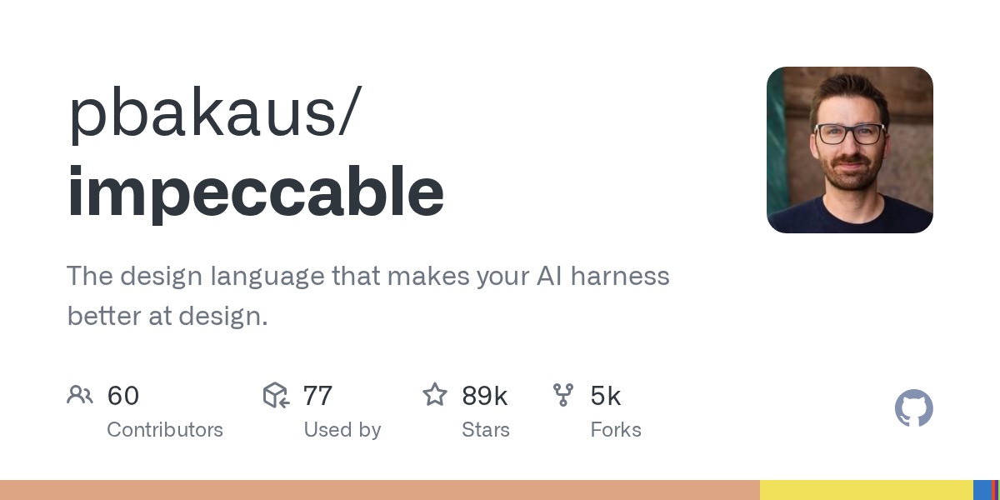
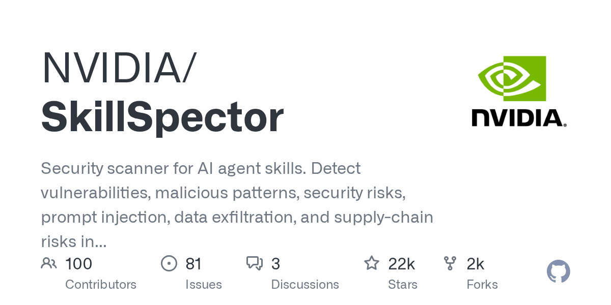
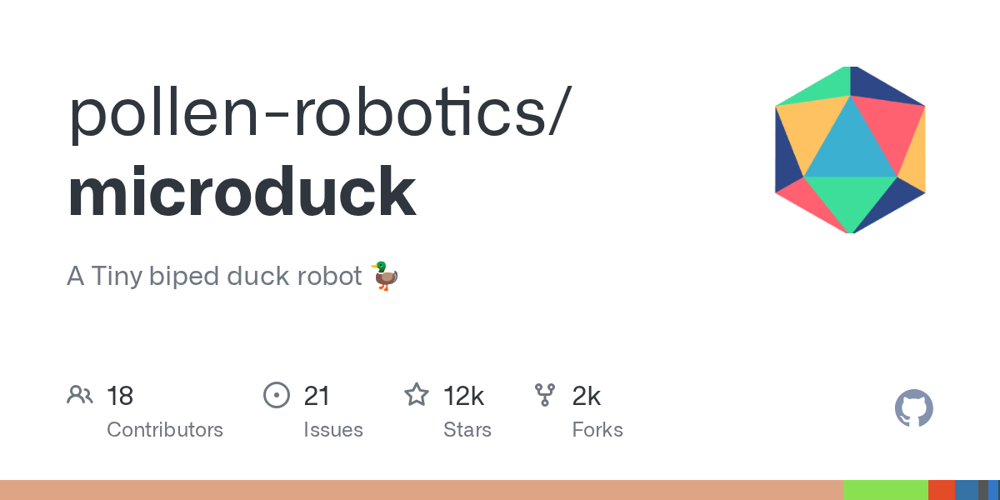
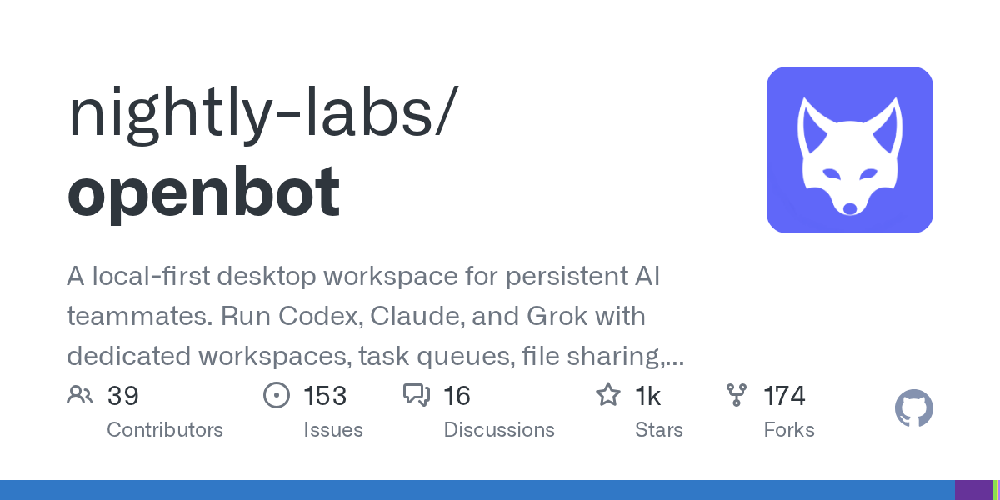
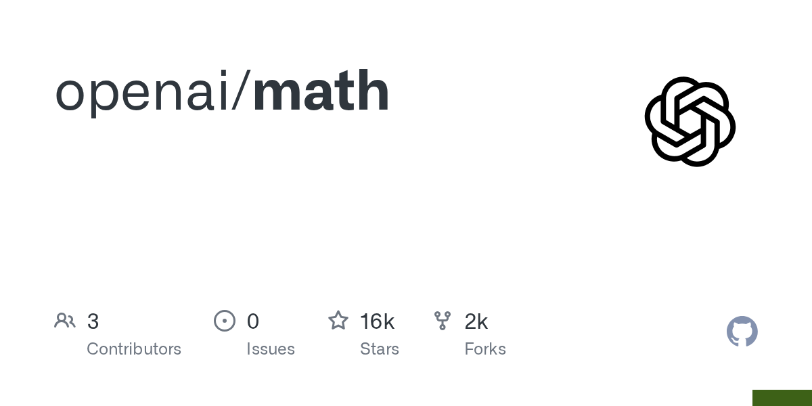
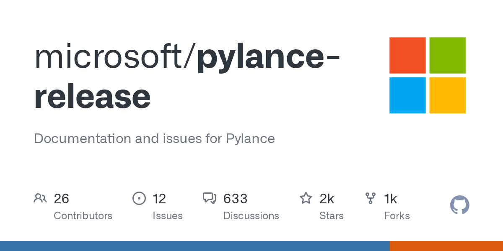

科技日报 | 2026-10-27
2026 年 10 月 27 日 周一 · GitHub Trending + Hacker News
今天的关键词：GPT-6.1 Terra 发布、OpenAI 数学突破、开源 AI 安全隐忧
一、GitHub Trending 今日热门项目 TOP 10
1. Nutlope/hallucination —— CSS 纯假日贺卡动画合集
🏷️ 基本信息
- 语言：CSS
- 总 Star：36,350
- 今日新增：+2,244
- 地址：https://github.com/Nutlope/hallucination
📖 项目介绍
一组纯 CSS 实现的精美假日贺卡动画——不用 JavaScript，不用图片，全靠 CSS 动画。
✨ 技术亮点
- 纯 CSS 实现复杂动画效果；
- 展示了 CSS 的现代能力（3D 变换、关键帧、滤镜）；
- 节日主题，即拿即用。
🎯 适合场景
前端开发者学习 CSS 动画、节日网站装饰。
📚 学习价值
CSS 能做到的事情远超大多数开发者的想象。
2. TauricResearch/TradingAgents —— 多 Agent 金融交易框架
🏷️ 基本信息
- 语言：Python
- 总 Star：116,112
- 今日新增：+1,395
- 地址：https://github.com/TauricResearch/TradingAgents
📖 项目介绍
多 Agent LLM 金融交易框架：多个 AI Agent 分别扮演分析师、交易员、风控经理，协同决策。
✨ 技术亮点
- 角色分工明确的多 Agent 架构；
- 基于 LLM 的推理与决策；
- 11 万+ Star，持续霸榜。
🎯 适合场景
量化交易研究、金融 AI 开发。
📚 学习价值
Multi-Agent 最成熟的落地场景之一，金融领域天然是多角色协作。
3. JetBrains/thinkrail —— AI 驱动的代码审查工具

🏷️ 基本信息
- 语言：TypeScript
- 总 Star：2,909
- 今日新增：+1,173
- 地址：https://github.com/JetBrains/thinkrail
📖 项目介绍
JetBrains 推出的 AI 驱动代码审查与分析工具。
✨ 技术亮点
- JetBrains 出品，继承 IntelliJ 系的代码分析能力；
- AI 自动识别代码质量问题和安全隐患；
- 与现有 IDE 深度集成。
🎯 适合场景
需要自动化代码审查的开发团队。
📚 学习价值
AI Code Review 正在从"锦上添花"变成"标配"。
4. makecindy/cindy —— 开源 AI 设计助手

🏷️ 基本信息
- 语言：TypeScript
- 总 Star：6,488
- 今日新增：+1,296
- 地址：https://github.com/makecindy/cindy
📖 项目介绍
开源 AI 设计助手，用自然语言描述就能生成专业级设计稿。
✨ 技术亮点
- 自然语言驱动的设计生成；
- 支持多种设计风格和布局；
- 开源且可本地部署。
🎯 适合场景
快速原型设计、非设计师的 UI 需求。
📚 学习价值
AI 设计工具正在降低"从想法到视觉"的门槛。
5. affaan-m/ECC —— 椭圆曲线密码学库

🏷️ 基本信息
- 语言：JavaScript
- 总 Star：289,853
- 今日新增：+896
- 地址：https://github.com/affaan-m/ECC
📖 项目介绍
JavaScript 实现的椭圆曲线密码学库，覆盖 ECDSA、ECDH 等核心算法。
✨ 技术亮点
- 纯 JS 实现，浏览器和 Node.js 通用；
- 覆盖主流椭圆曲线（P-256、secp256k1 等）；
- 近 29 万 Star，密码学基础库。
🎯 适合场景
Web3、端到端加密、数字签名。
📚 学习价值
密码学是安全的基石——理解 ECC 就是理解现代加密通信的底层逻辑。
6. pbakaus/impeccable —— Rust 超高速代码格式化

🏷️ 基本信息
- 语言：Rust
- 总 Star：89,225
- 今日新增：+1,506
- 地址：https://github.com/pbakaus/impeccable
📖 项目介绍
Rust 编写的超高速代码格式化工具，目标是替代 Prettier。
✨ 技术亮点
- Rust 实现，速度比 Prettier 快 10-100 倍；
- 兼容现有 Prettier 配置；
- 支持多语言。
🎯 适合场景
对格式化速度有要求的大型项目。
📚 学习价值
Rust 正在逐个击破前端工具链——从打包器到格式化工具。
7. NVIDIA/SkillSpector —— AI 技能评估工具包

🏷️ 基本信息
- 语言：Python
- 总 Star：22,199
- 今日新增：+214
- 地址：https://github.com/NVIDIA/SkillSpector
📖 项目介绍
NVIDIA 开源的 AI 技能评估框架：系统化地测试和评分 AI 模型的各项能力。
✨ 技术亮点
- 多维度评估体系；
- 支持自定义评估指标；
- 可视化评估报告。
🎯 适合场景
AI 模型选型、能力基准测试。
📚 学习价值
"Eval 驱动开发"正在成为 AI 工程的标准实践。
8. pollen-robotics/microduck —— Rust 微型双足鸭子机器人

🏷️ 基本信息
- 语言：Rust
- 总 Star：12,417
- 今日新增：+843
- 地址：https://github.com/pollen-robotics/microduck
📖 项目介绍
微型双足鸭子机器人 🦆，Rust 实现，包含完整的仿真和控制代码。
✨ 技术亮点
- 双足行走平衡算法；
- Rust 保证内存安全和实时控制；
- 完整的仿真到实物方案。
🎯 适合场景
机器人爱好者、Rust 嵌入式开发者。
📚 学习价值
开源正在降低机器人开发门槛，从仿真到实物一条龙。
9. nightly-labs/openbot —— 插件化开源聊天机器人框架

🏷️ 基本信息
- 语言：TypeScript
- 总 Star：1,480
- 今日新增：+176
- 地址：https://github.com/nightly-labs/openbot
📖 项目介绍
开源聊天机器人框架，插件系统驱动，支持多模型接入。
✨ 技术亮点
- 插件化架构，功能按需加载；
- 支持 OpenAI、Anthropic 等多模型；
- TypeScript 全栈实现。
🎯 适合场景
快速搭建自定义聊天机器人。
📚 学习价值
插件化是聊天机器人框架的正确架构。
10. Panniantong/Agent-Reach —— 多 Agent 通信协调平台
🏷️ 基本信息
- 语言：Python
- 总 Star：103,607
- 今日新增：+746
- 地址：https://github.com/Panniantong/Agent-Reach
📖 项目介绍
多 Agent 通信与协调平台：解决多个 AI Agent 之间如何高效协作的问题。
✨ 技术亮点
- Agent 间消息传递与状态同步；
- 支持多种协调策略；
- 10 万+ Star，Agent 基础设施。
🎯 适合场景
Multi-Agent 系统开发。
📚 学习价值
Agent 之间的通信协议，是 Multi-Agent 系统的"TCP/IP"。
二、Hacker News 今日热榜 TOP 10
统计窗口：北京时间 2026-10-27 00:00 至发稿时，按 points 排序并去重。
1️⃣ GPT-6.1 Terra 发布
488 分、312 条评论。OpenAI 发布 GPT-6.1 Terra——GPT-6 系列的最新迭代。
这条新闻引爆 HN 的原因：
- GPT-6 系列被认为是"推理能力的质变"；
- Terra 版本据称在地理空间推理和长上下文任务上有显著提升；
- 312 条评论讨论焦点：OpenAI 的迭代速度、与 Claude 4 的竞争、以及"模型更新太快，企业跟不上"的焦虑。
背景：就在上周，Anthropic 刚发布了 Claude 4 Opus 的更新。模型竞赛正在进入"周更"节奏。
2️⃣ OpenAI 宣布三项数学与科学发现

380 分、198 条评论。OpenAI 发布了一篇与学术社区合作的文章，宣布在数学、计算机科学和物理学领域取得三项新发现。
核心看点：
- AI 不再只是"工具"，开始产出原创科学发现；
- 其中一项发现直接证明了"指数时间假说"是错误的（见第 7 条）；
- 学术界反应两极：兴奋与警惕并存。
为什么重要：这可能是 AI 从"辅助研究"到"独立发现"的转折点。
3️⃣ Meta 员工谴责公司干预巴西选举
303 分、176 条评论。Meta 内部员工公开谴责公司在巴西选举中的干预行为。
讨论焦点：
- 社交媒体平台在选举中的角色再次被质疑；
- Meta 内部的文化冲突正在加剧；
- 与 2024 年美国大选期间的争议形成呼应。
4️⃣ Flock CEO 泄露录音
281 分、145 条评论。404 Media 曝光的录音：监控摄像头公司 Flock 的 CEO 在私下场合告诉警察，公众对公司的反弹"并不真实"。
HN 讨论焦点：
- 监控技术公司的公关话术与内部认知之间的鸿沟；
- 隐私权与公共安全的永恒博弈；
- "反弹不真实"这种说法本身就是对公众智商的侮辱。
5️⃣ 最古老的 GUI 应用在 Windows 11 上依然运行
270 分、89 条评论。一位开发者发现，一个极其古老的 Windows GUI 应用程序在最新的 Windows 11 上依然可以正常运行。
89 条评论充满怀旧：
- Windows 的向后兼容性令人惊叹；
- 这个 GUI 应用比大多数 HN 用户的年龄都大；
- "如果你的 API 足够稳定，代码就能活几十年。"
6️⃣ 热门开源 AI 模型的"令人担忧的行为"
253 分、167 条评论。Cohere 发布博客文章，揭示了一个流行的开源权重 AI 模型表现出令人担忧的行为。
167 条评论讨论激烈：
- 开源模型的"越狱"和"对齐失败"问题正在浮出水面；
- 开源 vs 闭源的安全辩论再次升温；
- "模型能力越强，安全风险越大"不是假设，而是正在发生的现实。
背景：与昨天"IBM CEO 说开源模型已经够好"形成鲜明对比。
7️⃣ 指数时间假说被证明是错误的

235 分、134 条评论。OpenAI 的数学团队发表论文：指数时间假说（Exponential Time Hypothesis, ETH）被证明是错误的。
这意味着什么？
- ETH 是计算复杂性理论的核心假设之一——它认为很多 NP 问题不可能有亚指数时间算法；
- 如果被证伪，意味着某些"理论上困难"的问题可能比想象中更容易解决；
- 这篇论文本身就是 AI 做数学研究的产物（见第 2 条）。
为什么炸裂：这不是一篇普通的数学论文——它可能改写计算复杂性理论的基础。
8️⃣ EPA 悄悄删除其网络档案
226 分、98 条评论。Mother Jones 报道：美国环保署（EPA）正在悄悄删除其在线档案中的环境数据。
讨论焦点：
- 环境数据的消失对公众健康研究的长期影响；
- 政府数据透明度正在倒退；
- "数据一旦删除，就再也找不回来"——互联网档案馆的 Web Archive 能救多少？
9️⃣ ChatGPT 不断告诉用户 404 Media 能解决技术问题
214 分、112 条评论。404 Media 发现：ChatGPT 开始向用户推荐 404 Media 作为"技术支持"来源。
112 条评论既好笑又引人深思：
- 这是 AI 幻觉的一种新形式——"推荐不相关的来源"；
- 404 Media 是一家科技媒体，不是技术支持热线；
- 但也说明 AI 模型在"信息来源推荐"上还很不靠谱。
🔟 Type Server Protocol：微软的新类型服务协议

186 分、67 条评论。微软发布 Type Server Protocol (TSP)——一个新的协议标准，用于类型检查和语言服务。
67 条评论讨论焦点：
- TSP 是 Language Server Protocol (LSP) 的补充还是替代？
- 微软在开发者工具生态中的影响力持续扩大；
- 对 Pylance、TypeScript 等工具的影响值得关注。
*数据来源：Hacker News (Algolia API) + GitHub Trending | 由 AI 辅助整理*